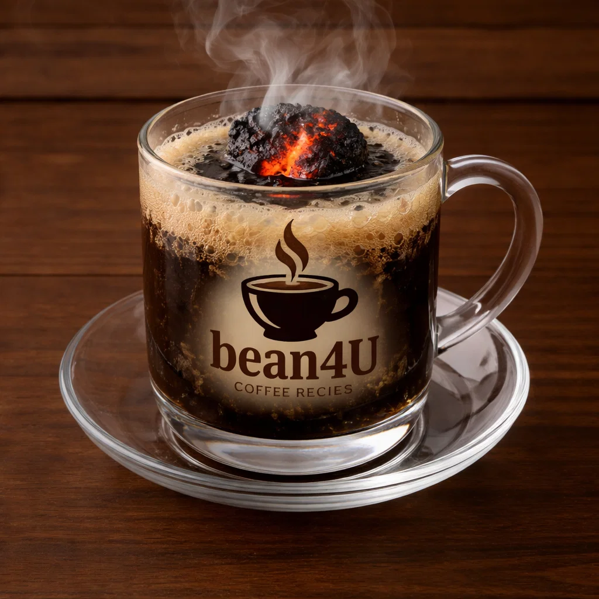

Kopi Joss

Ingredients
- Freshly brewed coffee
- One small piece of hot charcoal (handled safely)
- Sugar to taste
Preparation
- Brew coffee and pour into glass.
- Carefully insert the glowing-hot charcoal into the coffee (local tradition) — ensure safety.
- Stir and serve; charcoal imparts a distinct smoky flavor.
- Safety note: follow safe handling if attempting at home.
- youtube short quickly explaining it:
- short Explanation
Video from @jossstories
Channel